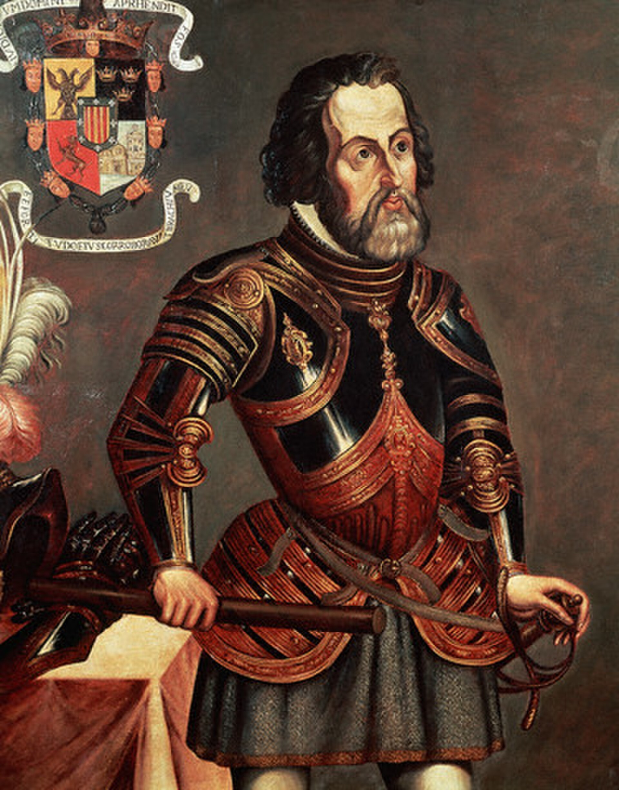

תקציר ביוגרפי
אטימולוגיה של השם
שמו של קורטס משלב שם פרטי ספרדי עתיק ושם משפחה בעל משמעות חברתית־תרבותית בעולם הספרדי. הצורות Hernán ו־Hernando קשורות לשם Fernando, ואילו Cortés הוא שם משפחה ספרדי המזכיר את המילה “אדיב” או “בן חצר”.
גנאלוגיה ומשפחה
קורטס נולד למשפחת הידלגו — אצולה נמוכה יחסית — באקסטרמדורה. משפחות מסוג זה החזיקו ייחוס וכבוד חברתי, אך לא תמיד החזיקו עושר גדול או אדמות רבות. הרקע הזה מסביר חלק מן הדחף של צעירים ספרדים לחפש מעמד, עושר ותהילה בעולם החדש.
ילדות באקסטרמדורה
קורטס נולד במדיין שבחבל אקסטרמדורה. זהו אזור פנים־ספרדי שיצאו ממנו כמה מן הכובשים והמגלים הידועים של המאה ה־16. אקסטרמדורה הייתה אז אזור שבו אצולה נמוכה, מסורת צבאית, מחסור יחסי באדמות ושאיפה להתקדמות חברתית יצרו תנאים מתאימים לצעירים שחיפשו הזדמנות מעבר לים.
בניגוד לדימוי של אדם שנולד לעושר עצום, קורטס גדל בסביבה שבה מעמד משפחתי לא תמיד הבטיח עתיד כלכלי. העולם החדש הציע בדיוק את מה שחסר לרבים מבני דורו: אפשרות לקבל אדמות, תפקידים, זהב, השפעה ותואר.
השכלה ותחילת הדרך
בצעירותו נשלח קורטס ללמוד בסלמנקה, כנראה לימודים הקשורים בלטינית, משפט ומנהל. הוא לא השלים מסלול אקדמי ארוך, אך עצם החשיפה לעולם המשפט והכתיבה סייעה לו בהמשך. קורטס ידע לנסח טיעונים, לכתוב מכתבים פוליטיים ולפעול מול רשויות ספרדיות באופן מתוחכם.
תחילת הדרך בעולם החדש: היספניולה
בשנת 1504 הגיע קורטס להיספניולה. זה היה שער הכניסה המרכזי של ספרד לעולם החדש. שם למד מקרוב כיצד פועלת מערכת מושבות: חלוקת אדמות, עבודה ילידית כפויה, חיפוש זהב, רשתות פקידים, משפט, קשרים פוליטיים ואינטרסים כלכליים.
קובה ותחילת הקריירה הפוליטית
בשנת 1511 הצטרף קורטס למסע כיבוש קובה תחת דייגו ולאסקס דה קוייאר. בקובה צבר מעמד, קיבל תפקידים, בנה קשרים פוליטיים ולמד כיצד משלחת ספרדית פועלת מול עמים מקומיים ומול יריבויות פנימיות בין ספרדים.
המסע למקסיקו: 1519
בשנת 1519 יצא קורטס מקובה בראש משלחת אל חופי מקסיקו. בתחילה הייתה זו משלחת חקר וסחר, אך במהרה הפכה למהלך עצמאי, צבאי ופוליטי. קורטס התנתק בהדרגה מסמכותו של ולאסקס בקובה ויצר לעצמו בסיס סמכות חדש מול הכתר הספרדי.
כמו אצל קולומבוס, גם כאן חשוב לדייק: האזורים שאליהם הגיע קורטס לא היו “לא ידועים” לתושביהם. הם היו חלק מעולמות ילידיים מפותחים, בעלי ערים, שווקים, דתות, בריתות ומלחמות. “הגילוי” הוא מנקודת המבט האירופית־ספרדית של התקופה.
תחנות המסע ומה גילה בכל אזור
מלינצ'ה — דוניה מרינה
מלינצ'ה, שנודעה גם כדוניה מרינה, הייתה דמות מרכזית במסע קורטס. היא שימשה מתורגמנית, מתווכת תרבותית ויועצת פוליטית. תפקידה היה מכריע משום שהכיבוש לא התבסס רק על חרבות ותותחים, אלא גם על הבנת שפות, בריתות, יריבויות ומבנה הכוח המקומי.
באמצעות מלינצ'ה וגרונימו דה אגילר הצליח קורטס לתקשר עם קבוצות ילידיות שונות, להבין מתחים פוליטיים ולכרות בריתות. לכן אי אפשר להבין את הצלחתו בלי להבין את תפקיד המתרגמים והמתווכים הילידיים.
הדרך לטנוצ'טיטלאן
קורטס התקדם מחוף המפרץ אל מרכז מקסיקו תוך כדי שילוב של מלחמה, דיפלומטיה, הפחדה ובריתות. הוא הבין שהאימפריה האצטקית שולטת בעמים רבים שלא כולם נאמנים לה מרצון. ההבנה הזו הייתה אחד הגילויים הפוליטיים החשובים ביותר של המסע.
הברית עם טלקסקלה הייתה קריטית. הספרדים לבדם היו מעטים מדי כדי להפיל את טנוצ'טיטלאן, אך עם בעלי ברית ילידיים רבים הם הפכו לכוח צבאי ופוליטי משמעותי.
טנוצ'טיטלאן והמפגש עם מוקטסומה השני
כאשר הגיע קורטס לטנוצ'טיטלאן, הוא פגש אחת הערים המרשימות ביותר בעולם של זמנו. העיר שכנה בלב אגם טסקוקו, הייתה מחוברת ליבשה בסוללות, וכללה תעלות, שווקים עצומים, מקדשים, ארמונות ומערכת עירונית מפותחת.
המפגש עם מוקטסומה השני היה רגע דרמטי: שליט אימפריה אמריקאית גדולה פוגש מנהיג משלחת ספרדית קטנה אך מסוכנת. מן הרגע הזה החלה שרשרת אירועים שהובילה למשבר פוליטי, מרד, נסיגה ספרדית ולבסוף מצור וכיבוש.
כיבוש האימפריה האצטקית
גילויים עיקריים
שנים מאוחרות
לאחר נפילת טנוצ'טיטלאן הפך קורטס לדמות מרכזית בספרד החדשה, אך גם לדמות שנויה במחלוקת. הוא קיבל תארים ונחלות, אך התמודד עם חקירות, יריבויות פוליטיות ומאבקים מול פקידי הכתר. כמו קולומבוס, גם קורטס גילה שהצלחת כיבוש גדולה אינה מבטיחה שליטה פוליטית יציבה לאורך זמן.
מורשת ומחלוקות
קורטס נחשב לאחד המצביאים והקונקיסטאדורים המשפיעים ביותר בהיסטוריה של ספרד ואמריקה. מצד אחד, הוא שינה את ההיסטוריה העולמית ופתח עידן חדש במקסיקו; מצד שני, פועלו קשור באלימות, הרס פוליטי ותרבותי, מגפות, שיעבוד וניצול עמים ילידיים.
דמותו נותרה טעונה במיוחד במקסיקו המודרנית. הוא אינו רק “מגלה” או “כובש”, אלא סמל למפגש אלים בין עולמות, לבריתות מורכבות בין עמים ילידיים, ולתחילת תקופה קולוניאלית ארוכה.